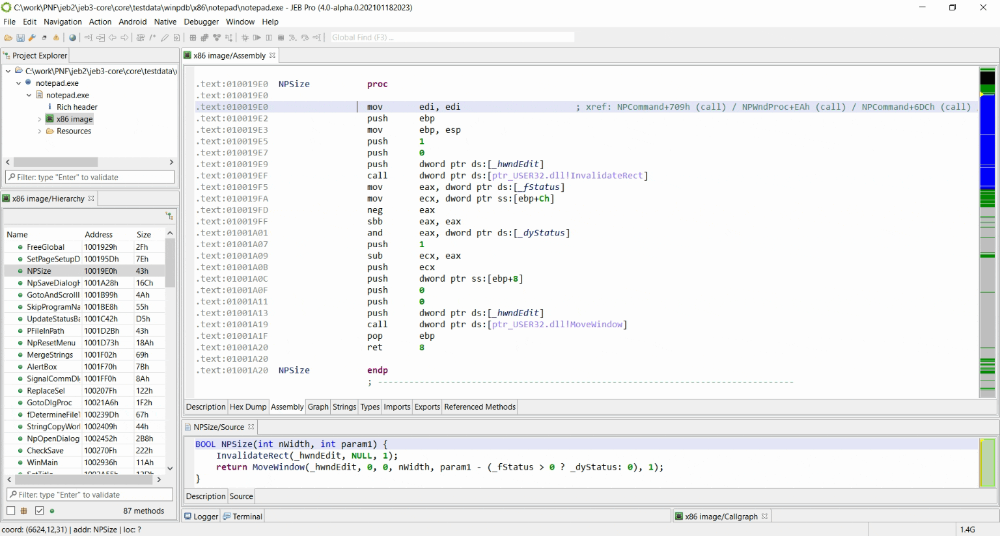

You can create signatures for native routines you analyzed, such that they will be automatically identified when you encounter them again (by loading the corresponding signature package). All modifications you made to the original routines will then be imported (names, comments, labels). Such signatures can be created from "Native" menu, or using default shortcut "S".
